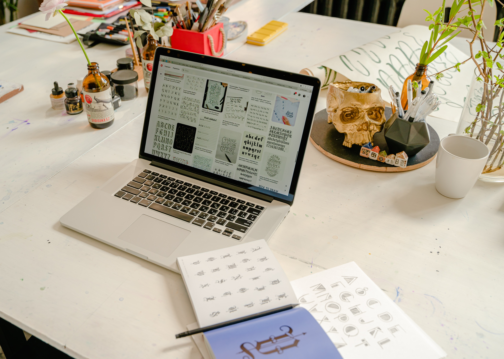

¿QUÉ APRENDIMOS EN ESTE PROMEDIO?
SEMANA 1
Sesión 1
El 19 de Marzo empezarón mis clases de Laboratorio 2 en Toulouse Lautrec con el profesor Jorman Leiru Llanos.
Este primer día aprendí sobre HTML y diferentes tipos de etiquetas para poder formar en base a estructura mi primera pagina web.
Sesión 2
En nuestra primera clase presencial conocía algunos de mis compañeros, tuvimos dificultades ya que hay un limitado número de laptops
y no todos podiamos avanzar, sin embargo me puse al día luego.

SEMANA 2
Sesión 3
Esta semana aprendí sobre más etiquetas para seguir desarrollando mi pagina web. Aun que debo admitir que se me complico un poco al principio pero
luego fui entendiendo mejor.
Sesión 4
En la clase presencial forme mi grupo final para mi proyecto junto a 4 compañeras que espero podamos trabajar en armonía todas juntas. También empezamos a usar
las plantillas para nuestra página web.

SEMANA 3
Sesión 5
En esta ocasión aprendimos más para el desarrollo de nuestra página web, vimos como redireccionar la página y agregar marcos de color en los textos e imágenes, aunque en
mi caso se complicó por la plantilla. En el aspecto grupal, lamentablemente tuvimos que reformar el grupo a cinco integrantes, aunque esto se deidio de forma armoniosa.
Sesión 6
En nuestra clase presencial nos dedicamos a revisar los avances de nuestra páginas web, en este caso le mostré al profesor mis respectivos avances con los errores corregidos
de la semana pasada y me otorgó el feedback sobre las cosas que debía mejorar antes de hacer mi entrega semanal.

SEMANA 4
Sesión 7
En esta nueva semana se nos enseño a como subir nuestra página web a la red para que las personas puedan acceder a ella mediante un enlace, las herramientas que usamos fueron
GitHub y Netlify. El primero nos ayuda a subir nuestro archivo elaborado en VisualCore y permite subirlo para estra en la Web, el segundo trabaja en conjunto con GitHub, es decir
que no es necesario que subamos neustro archivo mediante GitHub, sino que Netlify puede hacerlo.
Sesión 8
En nuestra clase presencial nos dedicamos a revisar los avances de nuestra páginas web, en este caso le mostré al profesor mis respectivos avances con los errores corregidos
de la semana pasada y me otorgo el feedback sobre las cosas que debía mejorar antes de hacer mi entrega semanal. También se nos introducio levemente a los arduinos, por lo
que para aprender más por nuestra cuenta y como tarea se nos asigno averiguar sobre proyectos
relacionados a los arduinos.
SEMANA 5
Sesión 9
En esta clase al ser virtual se nos enseño más sobre el trema de als etiquetas para mejor y optimizar más el tema de nuestra página web antes de las
entregas finales del primer promediopor lo que mejoré algunos aspectos extras mientras a la par averiguaba más del tema de arduinos ya que era el tema
a trabajar para el próximo promedio en el proyecto grupal.
Sesión 10
En el final del promedio 1, el profesor nos indicó sobre lo que realizaríamos en el próximo promedio, por lo que en forma grupal tuvimos que elegir una idea
propuesta por algún miembro del grupo que fuese lo suficientemente viable para desarrollarse con las herramietas que se nos enseñarían a usar en los
siguientes promedios.